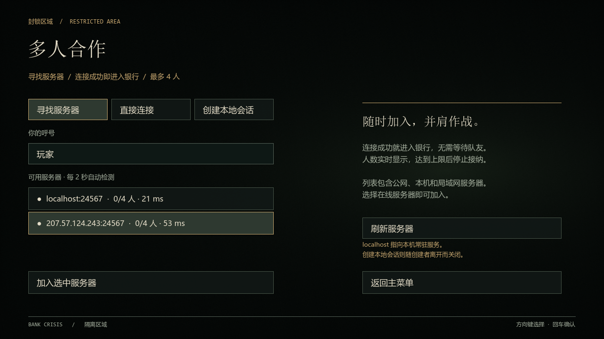
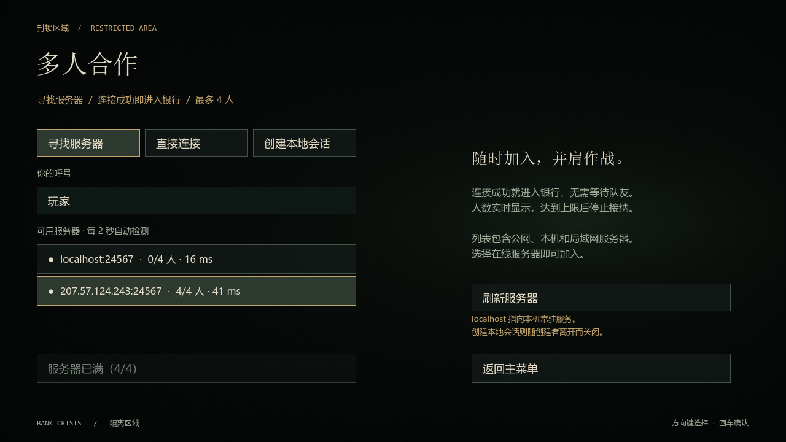
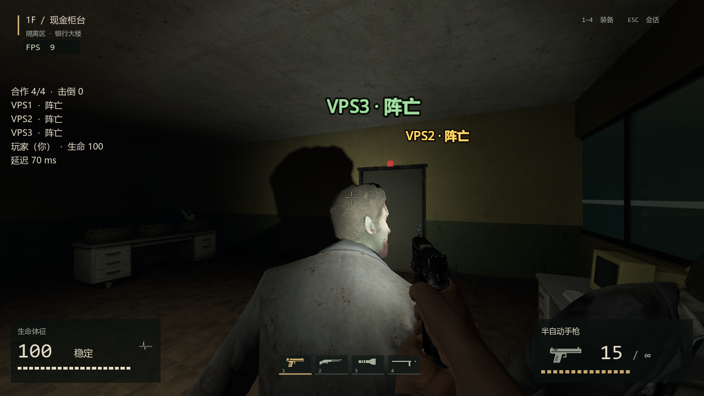
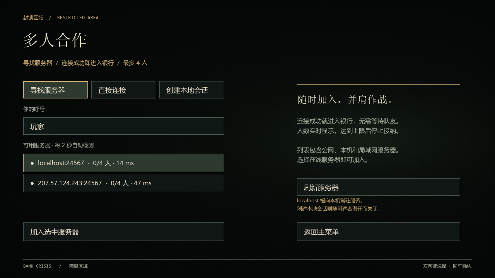
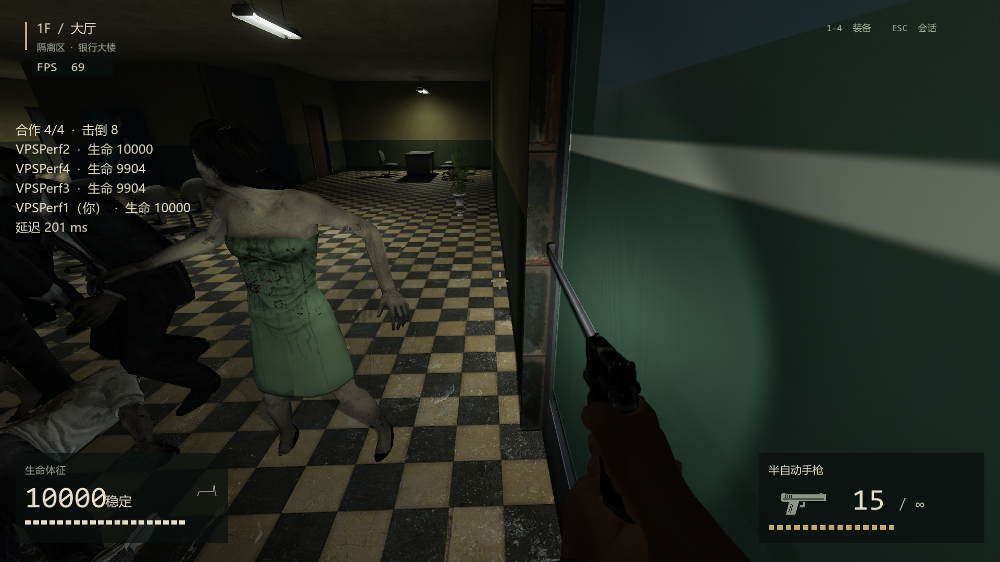

2026-10-18 · Ubuntu 24.04 · 2 vCPU / 4 GB · 真实公网 ENet
207.57.124.243 已部署，稳定性验收未通过
基础加入与 4 人容量流程通过；正式 EXE 的 120 秒驻留测试出现 2 次自动重连。大规模战斗受主线程 CPU 限制。服务器保持在线供试用，不能将本报告理解为稳定上线认证。
部署和运维文档 · 完整报告 · 逐组指标 CSV · 原始日志（含失败） · 文件校验
密集大厅：6 组连续运行采样
每组预热 5 秒、采样 30 秒。服务端 debug 引擎读取已部署 release 包；客户端 1 实际渲染，其余使用精简呈现负载端。初始尸群会被消耗，FPS 只代表本次测试电脑。
两人16敌的客户端1正常，客户端2却重连；因此不能只看单个客户端。四人16敌的异常受网络和宿主调度波动影响。双人84敌没有达到足够击杀/换弹要求。四人退出出现一次向已断开 peer 广播错误，均保留在报告中。
部署验证
游戏 UDP 24567，发现 UDP 24568。开机启动已 enable；空服 SIGKILL 后自动恢复，当前 0/4。进程内存约 578–597 MiB，无进程 swap；32/84 敌约占满单核。正式服务和调试测量的区别、早期失效样本与后续优化见文档。
实际客户端证据

默认列表：公网服务器 0/4，可加入
4/4 满员，加入按钮禁用
真实 UI 进入银行；此图不作为实时 FPS 证据
所有玩家离开后仍在线公网双人 32 敌密集战斗，诊断初始 HP 10000
公网四人 84 敌压力场景